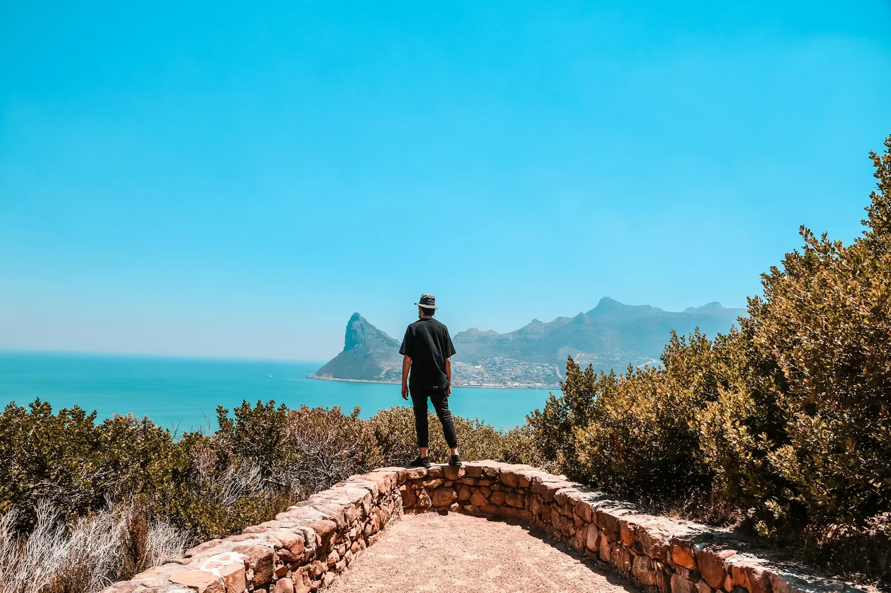

Chapman's Peak &
Winelands
A perfect blend of nature and wine – two of Cape Town's most popular attractions in one unforgettable day
Overview
Join me for a great day of visiting two of Cape Town's most popular tourist attractions – The Cape Peninsula and The Winelands of Constantia which is the oldest wine region, or the more popular Franschhoek or Stellenbosch Wine Region.
A very fun-filled tour which basically is hitting two birds with one stone – the first half of the day is all about nature viewing and the last part is all about wine tasting.
Places of interest
- Boulders Beach for penguin viewing
- Cape of Good Hope – southwestern tip of the continent
- Cape Point lighthouse with scenic view of False Bay
- Misty Cliffs drive towards Constantia
- Wine tasting at the first lady-owned wine estate
- Third wine estate in South Africa's oldest wine region (time permitting)
Tour Itinerary
Morning pick-up from your accommodation in Cape Town CBD or surrounding areas. Meet your guide and group.
Experience one of the world's most scenic coastal drives along Chapman's Peak, with breathtaking views of the Atlantic Ocean and rugged coastline.
Scenic drive along the dramatic coastline towards Constantia, with stunning ocean views and photo opportunities.
Explore the southwestern tip of the African continent and visit the Cape Point lighthouse for panoramic views of False Bay.
Visit the famous African penguin colony at Boulders Beach. Get up close with these charming creatures in their natural habitat.
Enjoy a leisurely lunch at a selected restaurant in the Constantia or Simon's Town area (own expense).
Visit the oldest wine estate in South Africa, established in 1685, for a guided wine tasting experience.
Experience wine tasting at the first lady-owned wine estate in South Africa, with a rich history and exceptional wines.
If time allows, visit a third wine estate in South Africa's oldest wine region for additional tastings.
Return to your accommodation in Cape Town with wonderful memories of a day combining nature and wine.
Enquire about availability
Prices are in South African rand, per person. Check the inclusions and additional entrance fees below. Availability, final costs and booking conditions will be confirmed before you book. Booking information
What's Included
- • Bottled water
- • Parking Fees
- • Air-conditioned vehicle
- • Lunch
- • Gratuities
- • Alcoholic Beverages
Meeting and Pickup
You can head directly to the meeting point, or request pickup.
V&A Waterfront, Cape Town, 8001, South Africa
Select a pickup point
This activity ends back at the meeting point.
We offer seamless pick-up and drop-off to our customers.
Additional Info
- • Confirmation will be received at time of booking
- • Not wheelchair accessible
- • Infants must sit on laps
- • Not recommended for pregnant travelers
- • No heart problems or other serious medical conditions
- • Most travelers can participate
- • This is a private tour/activity. Only your group will participate
Supplied by Happy Cape Tours